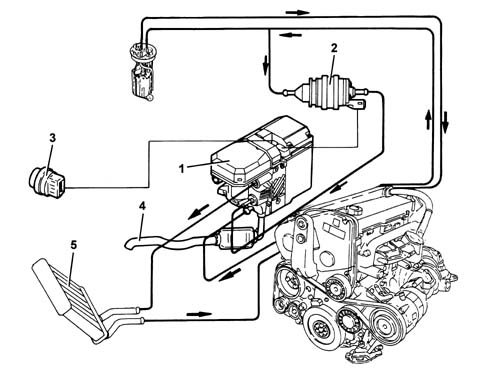
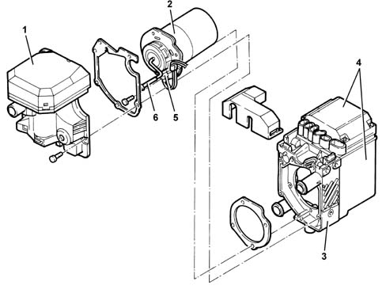
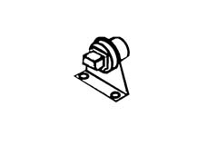
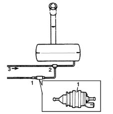
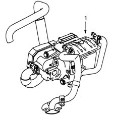
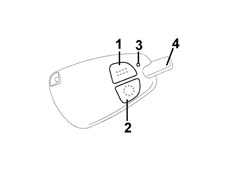
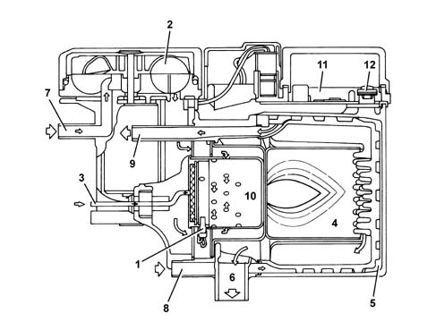
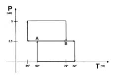

5020M supplementary independent heater
- Path
- Descriptions > 50 AUXILIARY UNITS > 5020 HEATER > 5020M supplementary independent heater
- Kind
- system description
- Applies to
- engines: 1.9 JTD 8V; all production periods
- Interactive page
- https://sloeber94.github.io/elrnDB-fMltpl/en/#/2888277
Applies to: engines: 1.9 JTD 8V; all production periods
The 'THERMO TOP Z' heater is an additional autonomous heater which is designed to heat the passenger compargtment more quickly with the engine running in the case of adverse weather conditions (for example, particularly cold climate).
Its operation is linked to the temperature of the engine coolant and to the outside temperature, detected by special sensors.
This device also allows:
- the pre-heating of the coolant and consequently the engine itself;
- window defrosting, due to passenger compartment heating;
- a reduction in the time taken for the engine to warm up.
The advantages of the adoption of an additional coolant heating system are as follows:
- reduction in engine wear.
- reduction in harmful emissions.
- improved comfort.
- improved safety.
Components
It consists essentially of:
- a heater unit (1) fixed to the front suspension crossmember and the underbody floor panel
- an electric fuel pump (2) fixed to the underbody near the fuel tank
- an outside air temperature sensor (3) positioned under the left front light cluster
- an exhaust pipe (4) connected directly to the heater unit.
- From 04/02: a relay for remote activation

1, Additional heater unit 2, Electric fuel pump 3, Outside air temperature sensor 4, Exhaust pipe 5, Passenger compartment heater radiator
Heater unit
-

1, Combustion air fan assembly 2, Burner 3, Burner casing 4, Electronic control unit/heat exchanger 5, Spark plug/flame control 6, Fuel pipe
The function of the individual heater unit components is illsutrated:
Burner casing
The burner casing includes:
- coolant inlet fillers.
- coolant outlet fillers.
- exhaust fumes outlet fillers.
The fuel supply takes place via a connector connected to the combustion chamber by means of a vapourizer (jet breaking metal sponge).
The air/fuel mixture is ignited in the combustion chamber producing heat to heat the heat exchanger and the coolant coming from the engine cooling circuit.
Heat exchanger
The transfer of the heat produced from combustion to the coolant takes place in the heat exchanger.
Heater plug/flame sensor
There is a heater plug/flame sensor in the burner located in the burner connector.
This sensor carries out two functions:
- igniting the air/fuel mixture
- checking for the presence of the flame (combustion chamber temperature).
In the last condition, the electronic control unit checks the ohmic value of the sensor, corresponding to the combustion temperature, using it to optimize the air/fuel ratio through the adjustment of the fuel air fan speed, varying the flow rate of the air drawn into the combustion chamber.
Fuel air intake fan
The combustion air fan transports the air, required for combustion, inside the combustion chamber.
The shape of the comburent air fan intake chamber has been designed to reduce internal resonance to a minimum which contributes to containing sound emissions to about 41 decibels.
The fuel air fan unit consists of:
- fan air intake connector.
- intake fan assembly, which produces a forced air flow.
- air supply connector for the combustion chamber. (The intake of air into the combustion chamber takes place by means of he ports in the actual partition).
The fan is operated by a modulation signal (2 kHz with a variable duty cycle) which alters the speed.
Electronic control
The system is managed by an electronic unit which guarantee the control and regular combustion.
The control unit is ventilated by means of an air flow coming from the burner, via a small rubber pipe.
Thermal sensor
The thermal sensor measures the temperature of the coolant inside the heat exchanger. This sensor, which is an integral part of the control unit, is located on the heat exchanger casing.
The signal from this sensor is used by the control unit for:
- protection against overheating.
- heating management and maintenance of the temperature of the coolant (thermostat function).
If the thermal sensor detects a coolant temperature above 105 °C, the overheating protection is activated, switching off the heater and protecting it from operating temperatures which are too high.
Outside air temperature sensor (thermal contact)
The outside air temperature sensor has the task (together with the coolant temperature sensor) of enabling the switching on of the additional heater.
At outside temperatures below 5 °C, this sensor switches off, sending a signal to the control unit with the engine running.

Metering pump
The metering pump has the task of supplying the fuel to the burner, taking it from the vehicle tank.
The burner diesel supply circuit is connected to the vehicle fuel return by means of a T connector.
The pump is operated by the control unit with an alternating signal (2.7 Hz).
The value of the fuel capacity is determined by the range of this signal.

1, additional electric pump 2, T connector 3, fuel return pipe
Exhaust gas pipe
The exhaust pipe is fitted with a silencer which has the function of reducing the exhaust noise emissions.
There is an opening in the exhaust pipe for any condensation to escape.

1, Silencer
The assembly contains an electronic control unit which controls the switching on, maintenance and switching off of the heater.
Applies to: engines: 1.9 JTD 8V; production: fino a 05/99, da 06/99 a 03/02
Switching on sequence:
The system can only be activated with the engine running, a condition which is detected by the electronic control unit via the alternator pin (D+) output signal.
Once the engine is started up, the heater control unit checks whether the ignition conditions exist:
- temperature of the coolant inside the heat exchanger below 60 °C
- outside temperature below 5 °C (measured by the thermal sensor).
If these conditions exist, the control unit operates the ignition of the fuel by means of a heater plug.
When this control stage is over, the control unit carries out the following ignition strategy:
- it operates the comburent air fan to supply oxygen to the combustion chamber. The fan rotation speed is gradually increased to an average value to facilitate the ignition of the diesel fuel.
- after 30s the electric fuel metering pump is switched on and the comburent air fan is switched off for 3 s. to facilitate the ignition of the diesel.
- after this time has elapsed, a fuel stabilization stage of around 15 s begins, where the fan is kept at a medium speed.
- over the next 50s the control unit makes the combustion chamber air intake fan reach almost full load operating conditions.
- after combustion has been stabilized, the system electronic control switches off the heater plug function (diesel ignition stage) and the air intake fan operates in full load conditions.
- over the next 45s and during normal combustion
After this time has elapsed, the regulated heating starts automatically.
Applies to: engines: 1.9 JTD 8V; production: da 09/03, da 04/02 a 08/03
Switching on sequence:
The additional heater is switched on and off using a special remote control (this remote control has a maximum range of around 600 metres in open spaces, with the range reduced in built up areas. )

1 on key 2 off key 3 led 4 aerial
The signal issued by the remote control is received by a special aerial on the car and sent to the heater control unit.
Applies to: engines: 1.9 JTD 8V; all production periods
Control of combustion
The heater plug is used by the electronics in a different way: as a combustion control sensor and as a flame presence control sensor:
- combustion control sensor: the control unit controls the temperature of combustion on the basis of the ohmic value. The value read is sampled with the tables to vary the speed of the air intake fan (and consequently the flow rate) in order to optimize the stoichiometric ratio.
- flame presence control sensor: the control unit checks for the presence of the flame, checking the temperature of the combustion chamber and on the basis of the ohmic value.
If the flame goes out, the control unit stops the supply of diesel, reactivating a new ignition cycle.
At the third failed attempt to switch on the heater, the control unit stops:
- removing the supply to the additional electric fuel pump;
- keeping the air intake fan operating for several seconds, facilitating the combustion of the residual fuel inside the combustion chamber.

1, Spark plug/flame control 2, Comburent air fan 3, Fuel pipe 4, Combustion chamber 5, Engine coolant 6, Exhaust gas 7, Intake air 8, Engine coolant inlet 9, Engine coolant outlet 10, Burner 11, Electronic control unit 12, Engine coolant temperature sensor
Automatically adjusted heating cycle
After the electronic unit has concluded the various initial checks on the flame ignition, which takes place at coolant temperatures below 60 °C, the temperature adjustment/maintanence strategy begins.
At the moment of ignition the system is operating in full load conditions (heating stage).
When the level of 71 °C (point B) is reached, the heater automatically switches to operating in partial load conditions to reduce consumption.
The temperature will continue to rise, until the level of 72 °C is reached and the heater will switch to adjustment pause.
The coolant, no longer being heated, will start to cool down.
On reaching the level of 60 °C the heater will start operating in partial load conditions (point A).
From this moment (point A) the control unit will carry out a check on the coolant temperature.
Following this check, the control unit can implement two strategies:
- it maintains operation in partial load conditions, if the temperature increases;
- switching to full load operation, if the temperature decreases in spite of the heating (as a result of the increased heat requirements, for example: shift from first speed to max speed of the interior heater fan).

P, thermal power T, engine coolant outlet temperature
Safety devices
The flame is kept in check by the heater plug/flame control. If the temperature of the heater plug exceeds 125 °C, the additional fuel pump supply is interrupted and the control unit memorizes an error.
The system is also interrupted in the following cases:
- failed ignition of the fuel
- fuel cut off during operation
- voltage below 10.5 V or above 15 V measured in the control unit;
In addition, the efficiency of the components associagted with the burner is checked for each ignition and, if there are irregularities, the control unit inhibits the operation of the burner.
The heater control unit has line K to check the system or diagnose any faults via the Examiner or other diagnostic equipment.
it is also possible to check and, if necessary, modify the value of the exhaust CO2 if it does not conform to the amount set, still using the Examiner.
Technical Data
Fuel, diesel
Calorific output, Full power 5.0 kW - Reduced power 2.5 kW
Fuel consumption Full power 0.50 kg/h - Reduced power 0.25 kg/h
Nominal voltage 12 V
Operating voltage range 10.5 - 15 V
Absorption without coolant circulation pump
(without vehicle fan), Full power 32 W - Reduced power 18W
Permissible excess operating pressure 0.4 - 2.5 bar
Capacity of the exchanger 0.15 lt
Minimum circuit quantity 4.0 lt
Minimum capacity for exhanger 250 lt/h
CO2 in exhaust gas (permissible range) 8 - 13.0 Vol. %
Heater plug consumption (when hot) 100 W approx
Heater plug resistance 0.3 Ohm ± 10%
Fan resistance 9 Ohm approx